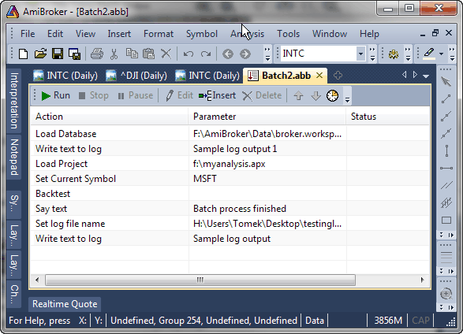
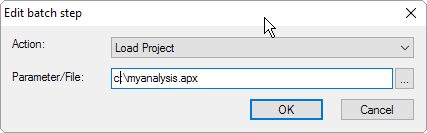
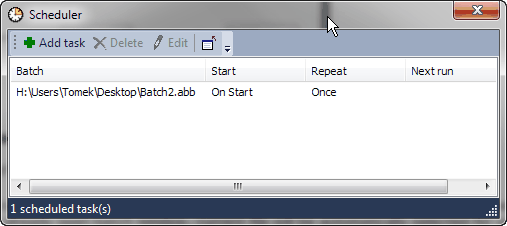
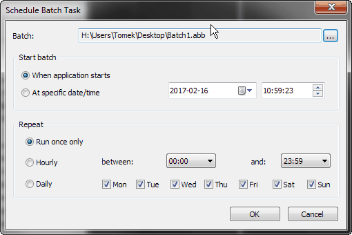

or
The Batch window introduced in version 6.20 (first introduced in 6.17.0 BETA) allows the user to automate mundane repetitive tasks by providing batch processing.
Now the user can easily define and automatically run sequences of Analysis operations such as scan, exploration, backtest, optimization, and file export. Previously such automation was available only for programmers by means of OLE automation. Now it is available to everyone via an easy-to-use interface.
Generally, a batch consists of any number of the following basic operations:
You can open the New Analysis window in a number of ways:
The user interface for the Batch window is very simple:

Adding/inserting new batch step
You can add a new batch step by clicking on the Insert button. It will add a new step at the end if nothing was selected prior to clicking, or it will insert a new step before a previously selected step. You can also add a new step if you just double-click on the list past the last listed step.
If you add/insert a new step, the Edit batch step window will appear (see below).
Editing existing batch step
To edit an existing item, double-click on it, or use the Edit button. The Edit batch step window will appear, allowing you to define the batch step action and parameters:

In this window you can select an action to be performed using the Action combo box and enter the Parameter or File name to be used for the given action.
Actions like Load Project, Export to File or Play sound (.WAV) need a file name to be entered/picked via the (...) button. Actions like Set Current Symbol or Say need a text parameter (symbol or text to be spoken) to be entered. Other actions (like Scan, Backtest, ...) do not need any extra parameters. When a selected action does not require a parameter, the second entry field (Parameter/File) is hidden.
Once you select the desired action along with parameters, press OK to accept this step. If you change your mind, press Cancel. If you cancel the Insert operation, the newly inserted item will be removed from the list.
Deleting existing batch step
To delete an existing batch step, select it by clicking on the list and press the Delete button.
Moving/rearranging batch steps
You can change the sequence of existing steps by moving individual items up and down. To move an item up or down, please click on it once and use the blue up and down arrow buttons in the toolbar. You can also rearrange items by dragging them. To do so, click on item(s) once (to multi-select, use the CTRL or SHIFT key), and then pressing and holding down the left mouse button, drag them to the desired location.
Running a batch
Once all batch steps are defined, you can run the sequence by pressing the Run (green arrow) button in the toolbar. All steps will be executed in the sequence; you will see the status of subsequent items changing to "In progress...", then to "Completed" or "Failed". If any step ends up with a "Failed" status, the entire batch execution is stopped.
To temporarily pause the execution of a batch, press the Pause button. To abort the execution of a running batch, press Stop button. (These buttons are only active when a batch is running; otherwise, they are disabled/grayed).
Saving a batch for future use
A batch sequence can be saved using File->Save / File->Save As... into an .abb file (stands for AmiBroker Batch).
Once a batch is saved, it can be later loaded back using File->Open or using File->Recent Files menu.
Running external programs from a batch
A batch command Execute And Wait allows you to execute an external program and wait for its completion (this allows, among other things, launching an AmiQuote download and waiting until it is complete).
The following example launches AmiQuote, loads "YourTickerList.tls", performs download and closes AmiQuote:
ExecuteAndWait amiquote\quote.exe YourTickerList.tls /download /close
Running data plugin commands
Some data vendors may provide special data-specific commands that can be run from a batch. For example, PremiumData will provide database maintenance capability.
To run a data plugin command, use:
DataPluginCmd commandname
Where commandname is a data-vendor-specific command. Please consult the data vendor for details. If you specify a non-existing command, the status of the operation will be "Failed" and batch execution will stop.
Importing quotation data from ASCII files
The DataImportASCII command allows you to automate imports via a batch. The parameter is the file name to be imported. The importer uses the file extension to determine the format file used, so if you are importing File.aqh, then the aqh.format definition file will be used automatically. Import would fail if the corresponding definition file does not exist in the "Formats" subdirectory.
Triggering a batch run programmatically from the AFL level
It is possible to start the batch programmatically from AFL. The ShellExecute function in AmiBroker 6.20 supports the "runbatch" command.
if( ParamTrigger("batch", "run
me" ) )
{
ShellExecute("runbatch", "path_to_batch_file.abb", "" );
}
Please note that this is an asynchronous call; i.e., ShellExecute will start a batch and return immediately, even though the batch may (and usually will be) still running, so it is a "fire-and-forget" kind of operation. Be careful, as repeated executions of AFL would trigger repeated batch runs. After running the batch, the batch and analysis windows that were opened by the batch are automatically closed.
Batches can be scheduled for an automated run at a certain time or at application startup. To open the batch Scheduler, either click on the Scheduler icon (clock) in the Batch toolbar or use the Tools->Scheduler item from the main application menu.
This will open the Scheduler window

In the Scheduler window's toolbar, you can see the icons to Add, Delete, and Edit tasks and to decide whether to close the batch window on completion.
The list displays the path to the batch file, Start date/time, and Repeat interval, and the date/time of Next run. If a batch is scheduled to be run on startup, then the Next run field will be empty.
To add a task, click the Add task icon. This will open the following dialog:

To define a scheduled run of a batch, please do the following:
Once you are done, click OK and you will see the scheduled task in the Scheduler window list.